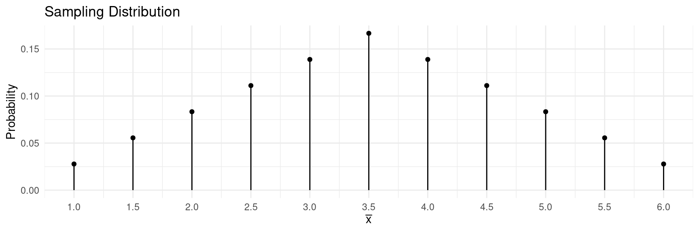
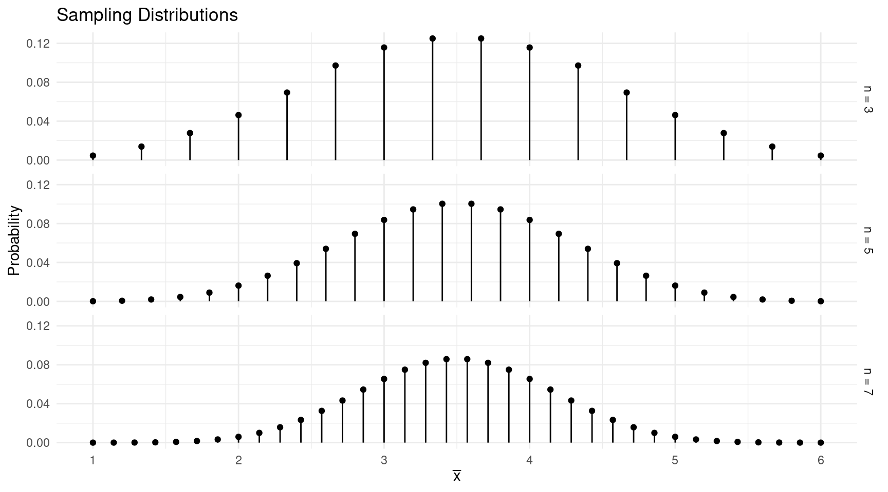

You can also download a PDF copy of this lecture.
The mean of \(\bar{x}\) equals \(\mu_x\) (i.e., \(\mu_{\bar{x}} = \mu_x\)). The standard deviation of \(\bar{x}\) is \(\sigma_x/\sqrt{n}\) (i.e., \(\sigma_{\bar{x}} = \sigma_x/\sqrt{n}\)).
The mean of \(\hat{p}\) equals \(p\) (i.e., \(\mu_{\hat{p}} = p\)). The standard deviation of \(\hat{p}\) is \(\sqrt{p(1-p)/n}\) (i.e., \(\sigma_{\hat{p}} = \sqrt{p(1-p)/n}\)).
| \(x\) | \(P(x)\) |
|---|---|
| 1 | \(p\) |
| 0 | \(1-p\) |
The mean of \(x\) is \[ \mu_x = \sum xP(x) = 1 \times p + 0 \times (1-p) = p, \] and the standard deviation of \(x\) is \[ \sigma_x = \sqrt{\sum (x - \mu)^2P(x)} = \sqrt{(1-p)^2 \times p + (0-p)^2 \times (1-p)} = \sqrt{p(1-p)}. \] The mean of a sample of observations of \(x\) (i.e., \(\bar{x}\)) is a proportion. For example, if our observations of \(x\) are 1, 1, 0, 1, 0, 0, 0, 1, 1, 1, then the mean is \[ \bar{x} = \frac{1 + 1 + 0 + 1 + 0 + 0 + 0 + 1 + 1 + 1}{10} = 0.6, \] which is also the proportion of observations where we observe a success. So \(\hat{p} = \bar{x}\).
Now applying what we know about the sampling distribution of \(\bar{x}\), we have \[\begin{align*} \mu_{\bar{x}} & = \mu_x = p, \\ \sigma_{\bar{x}} & = \sigma_x/\sqrt{n} = \sqrt{p(1-p)}/\sqrt{n} = \sqrt{p(1-p)/n}. \end{align*}\]
Central Limit Theorem: If \(X_1, X_2, \dots, X_n\) are independently and identically distributed random variables so that \(E(X_i) = \mu\) and \(E(X_i - \mu)^2 = \sigma^2 < \infty\), then \[ \sqrt{n}(\bar{X} - \mu)/\sigma \stackrel{d}{\rightarrow} N(0,1), \] where \(\bar{X} = \frac{1}{n} \sum_{i=1}^n X_i\), and where \(\stackrel{d}{\rightarrow}\) denotes convergence in distribution.
Central Limit Theorem (Layperson’s Version): As \(n\) increases, the shape of the sampling distribution of \(\bar{x}\) “approaches” that of a normal distribution.
Example: Suppose we roll \(n\) = 2 fair 6-sided dice. What is the shape of the sampling distribution of the mean number of dots (i.e., \(\bar{x}\))?| \(x\) | \(P(x)\) |
|---|---|
| 1 | 1/6 |
| 2 | 1/6 |
| 3 | 1/6 |
| 4 | 1/6 |
| 5 | 1/6 |
| 6 | 1/6 |
| First Die | 1 | 2 | 3 | 4 | 5 | 6 |
|---|---|---|---|---|---|---|
| 1 | 1.0 | 1.5 | 2.0 | 2.5 | 3.0 | 3.5 |
| 2 | 1.5 | 2.0 | 2.5 | 3.0 | 3.5 | 4.0 |
| 3 | 2.0 | 2.5 | 3.0 | 3.5 | 4.0 | 4.5 |
| 4 | 2.5 | 3.0 | 3.5 | 4.0 | 4.5 | 5.0 |
| 5 | 3.0 | 3.5 | 4.0 | 4.5 | 5.0 | 5.5 |
| 6 | 3.5 | 4.0 | 4.5 | 5.0 | 5.5 | 6.0 |
| \(\bar{x}\) | \(P(\bar{x})\) |
|---|---|
| 1.0 | 1/36 |
| 1.5 | 2/36 |
| 2.0 | 3/36 |
| 2.5 | 4/36 |
| 3.0 | 5/36 |
| 3.5 | 6/36 |
| 4.0 | 5/36 |
| 4.5 | 4/36 |
| 5.0 | 3/36 |
| 5.5 | 2/36 |
| 6.0 | 1/36 |

What if we roll \(n\) = 3, \(n\) = 5, or \(n\) = 7 dice?
 Here is another demonstration that uses simulation to illustrate the central limit theorem.
The practical implication of the central limit theorem is that we can often assume that the shape of the sampling distribution of \(\bar{x}\) (or \(\hat{p}\)) is approximately that of a normal distribution.
Recall that the empirical rule states that approximately 95% of observations are within two standard deviations of the mean. Adapting this to a normal probability distribution, we can say that there is approximately a probability of 0.95 that the random variable will be within two standard deviations of the mean of the distribution.
The probability that \(\bar{x}\) will be between \(\mu_x - 2\sigma_x/\sqrt{n}\) and \(\mu_x + 2\sigma_x/\sqrt{n}\) is approximately 0.95.
The probability that \(\hat{p}\) will be between \(p - 2\sqrt{p(1-p)/n}\) and \(p + 2\sqrt{p(1-p)/n}\) is approximately 0.95.
| Obs | Cross | Self | Difference |
|---|---|---|---|
| 1 | 23.500 | 17.375 | 6.125 |
| 2 | 12.000 | 20.375 | -8.375 |
| 3 | 21.000 | 20.000 | 1.000 |
| 4 | 22.000 | 20.000 | 2.000 |
| 5 | 19.125 | 18.375 | 0.750 |
| \(\vdots\) | \(\vdots\) | \(\vdots\) | \(\vdots\) |
| 15 | 12.000 | 18.000 | -6.000 |
| \(x\) | \(P(x)\) |
|---|---|
| cross | 0.8 |
| self | 0.2 |
Estimation is a kind of inference in which we use a statistic to estimate a parameter.
We can use \(\bar{x}\) (i.e., the mean of a sample of \(n\) observations of \(x\)) to estimate the mean of a single observation (i.e., \(\mu_x\)).
We can use \(\hat{p}\) (i.e., the proportion of observations in a sample of \(n\) observations where we observed a “success”) to estimate the probability of a “success” (i.e., \(p\)).
Note: Parameters like \(\mu_x\) and \(p\) have a couple of interpretations here. One is that they are properties of the population distribution. But in a survey with a finite number of observations, \(\mu_x\) is also the mean of all observations in the population, and \(p\) is a proportion based on all observations in the population. This is because in these cases the population distribution is both a probability distribution and also the distribution of all observations in the population.
The sampling distributions of \(\bar{x}\) and \(\hat{p}\) are what we use to determine how effective these statistics are at estimating the parameters \(\mu_x\) and \(p\), respectively.
Both \(\bar{x}\) and \(\hat{p}\) are unbiased, meaning that the mean of \(\bar{x}\) equals \(\mu_x\), and the mean of \(\hat{p}\) equals \(p\).
A standard error is the standard deviation of a statistic. The standard error of \(\bar{x}\) is \(\sigma_x/\sqrt{n}\), and the standard error of \(\hat{p}\) is \(\sqrt{p(1-p)/n}\).
The central limit theorem implies that (unless \(n\) is very small) we can regard the shape of the sampling distributions of \(\bar{x}\) and \(\hat{p}\) as approximately that of a normal distribution for the purpose of computing probabilities concerning \(\bar{x}\) or \(\hat{p}\).
The above statements require certain technical assumptions about how the data are collected. We will discuss that in a later lecture.